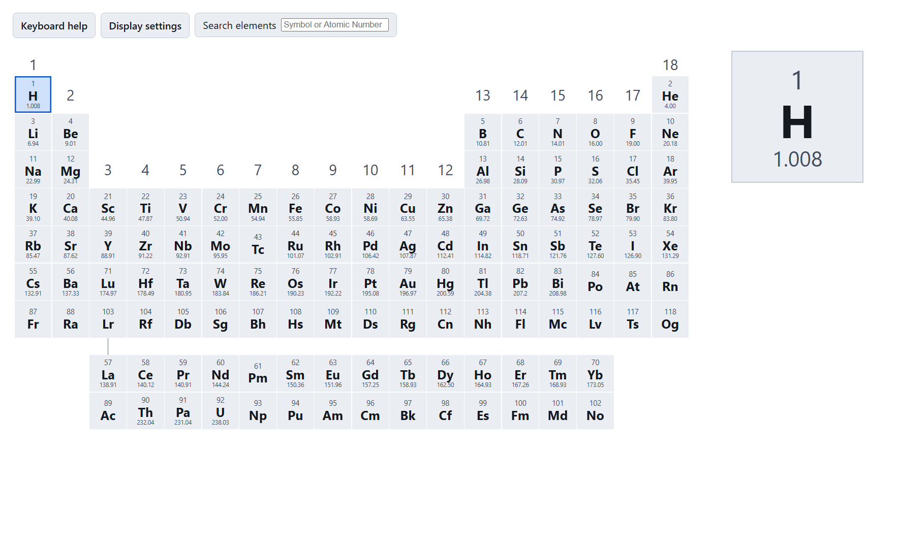
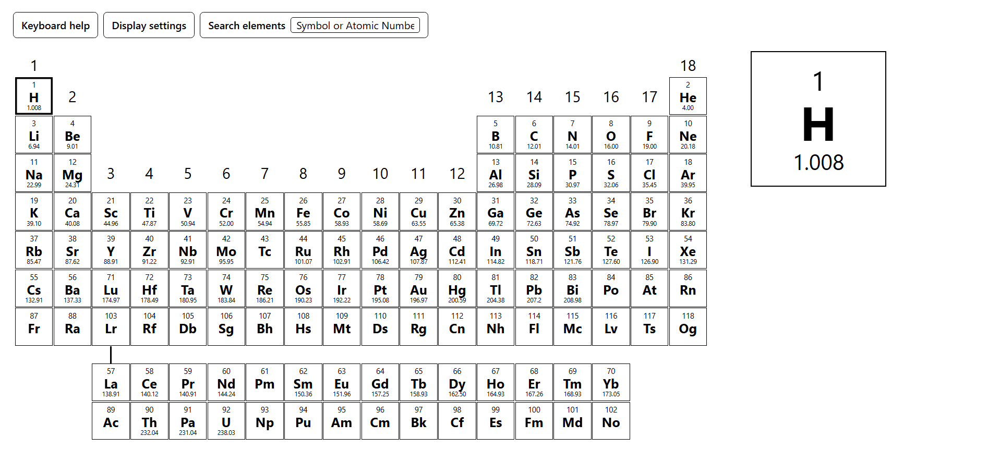
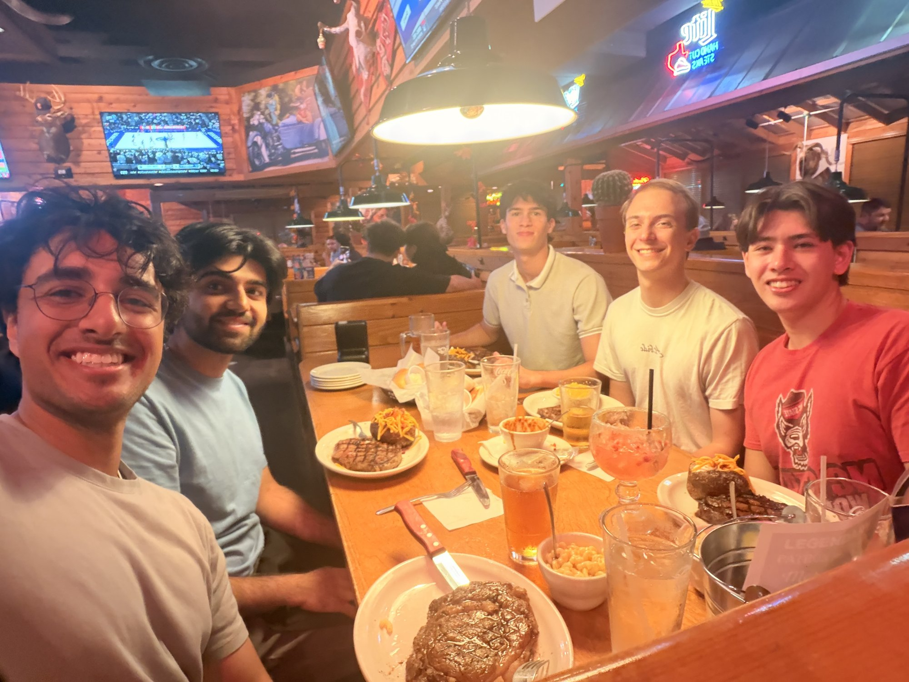

A senior design project for CollegeBoard, built so blind and low-vision students can use it too.

The periodic table is organized spatially and an incredibly visual element of chemistry. An element's number of valence electrons matches the ones digit of its group/column number and every element in a period/row has the same number of principle electron shells. Previous implementations of the periodic table designed for blind/low-vision use read the elements as a list, which removes the spatial orientation aspect of each element. Screen readers had trouble reading/pronouncing element symbols. The symbol "Mg" was read as "milligrams" instead of "em gee" for magnesium. They were unable to differentiate between "B" and "Be" for boron and beryllium. This makes it difficult for blind/low-vision students to learn the periodic table and chemistry, creating a barrier for them in STEM fields.
College Board is a not-for-profit organization with the goal of standardizing and expanding access to higher education in the United States. They are known for the SAT college entrance exam and AP (Advanced Placement) classes/exams. AP classes give a student the opportunity to earn college credit if they pass the accompanying exam, saving them time and money and allowing them to better prepare for college level classes. In 2026, around 185,000 students took the AP Chemistry exam. Our contact at College Board is Dr. Maggie Linak, the former Deputy Chief Scientist of USAID and the current Executive Directory of Accomodations and Accessibility at College Board.
Using React and JavaScript we built our own periodic table. We used arrow key movement to preserve spatial orientation of elements in all four directions and implemented a custom narration system using Amazon Polly. When custom dictation is enabled in settings, the entire periodic table becomes ARIA hidden to allow our custom narration to take over. A keyboard help and settings menu are always readable by the screen reader. Additional quality of life features were built in for use parity between blind/low-vision and sighted students. While a sighted student can't get "lost" on the periodic table, a blind student might, so we added a key to jump to Hydrogen. Sighted students can scan the table to look for an element, so we added a search feature to help blind/low-vision students find elements. If a sighted student needs to compare element information, they can look at the element cards themselves, but a blind/low-vision student has to remember and find information again, so we created a bookmark feature for them to save elements next to each other.
A version of the table has been created that is compatible with AP testing standards. We are in the process of receiving user feedback and building out a classroom/learning mode for users to become familiar with the table and learn how to use it. The classroom mode will be built on top of the completed testing mode, adding new information like the eleement names and more that aren't allowed on the AP exam.

